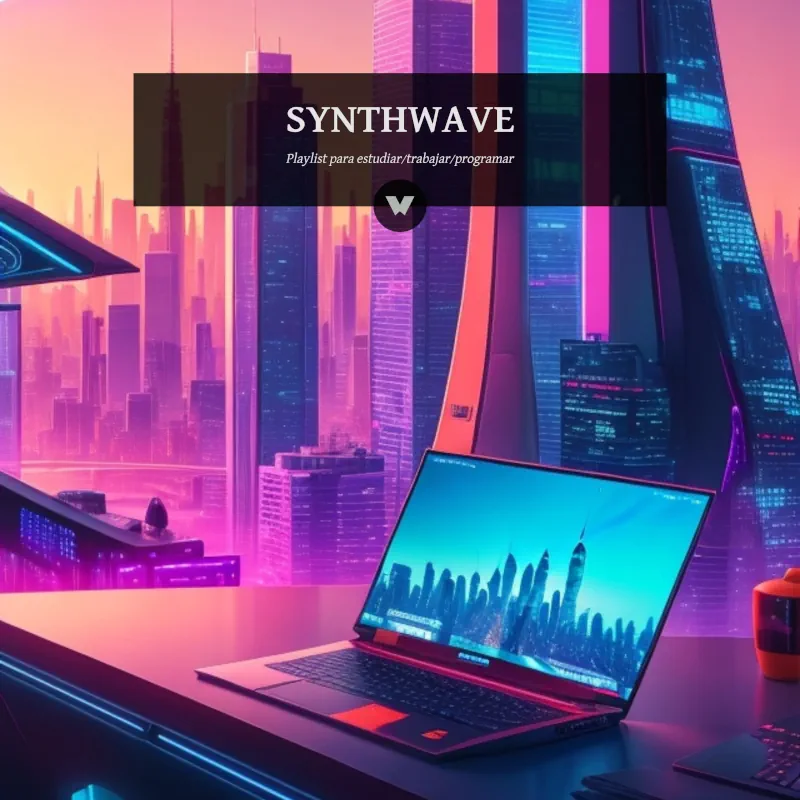
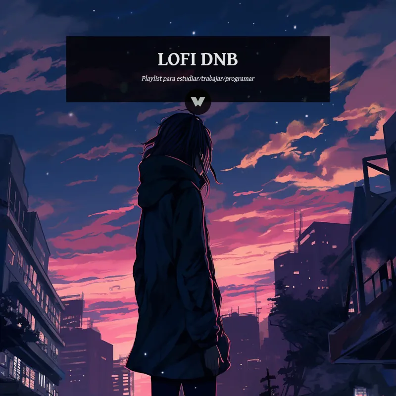
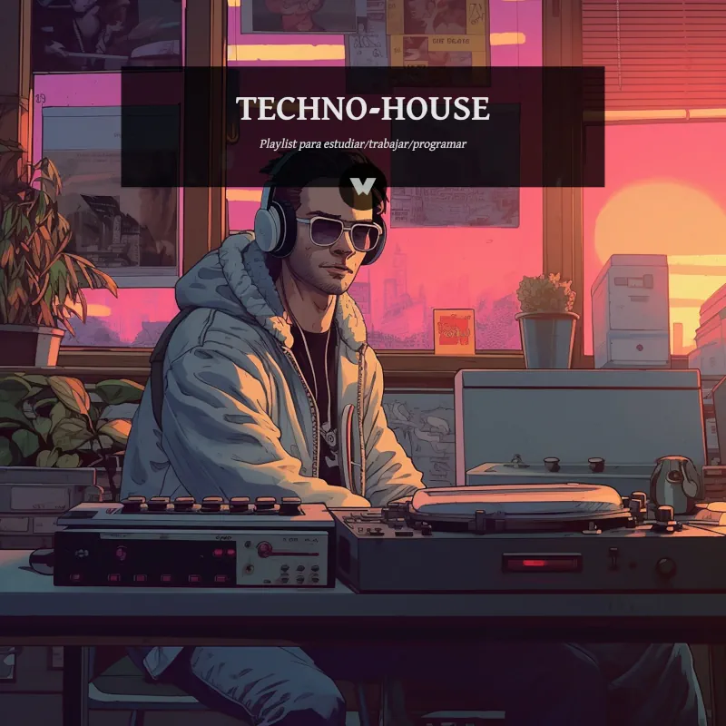
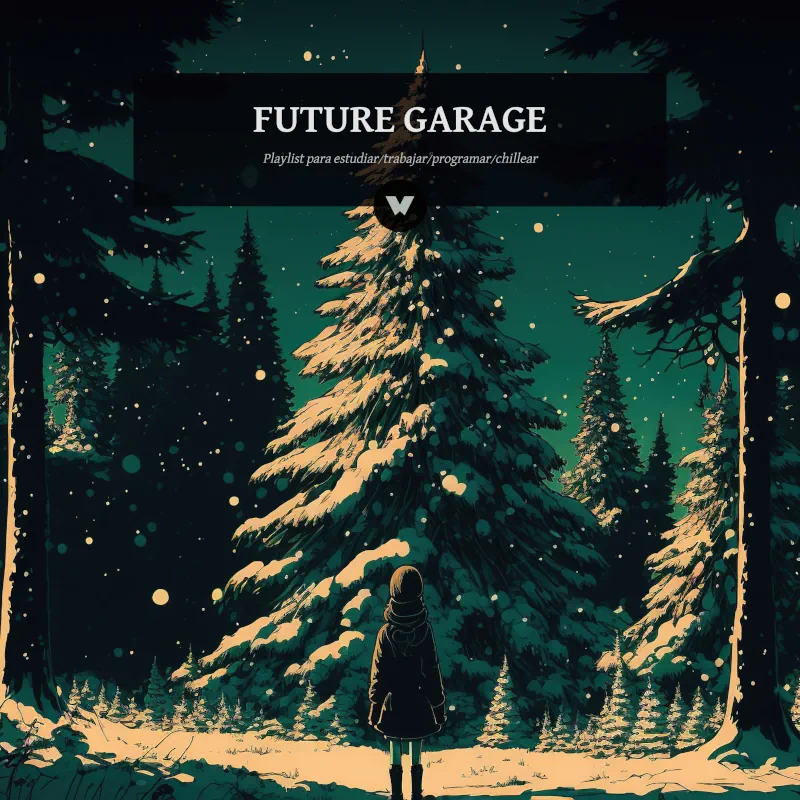
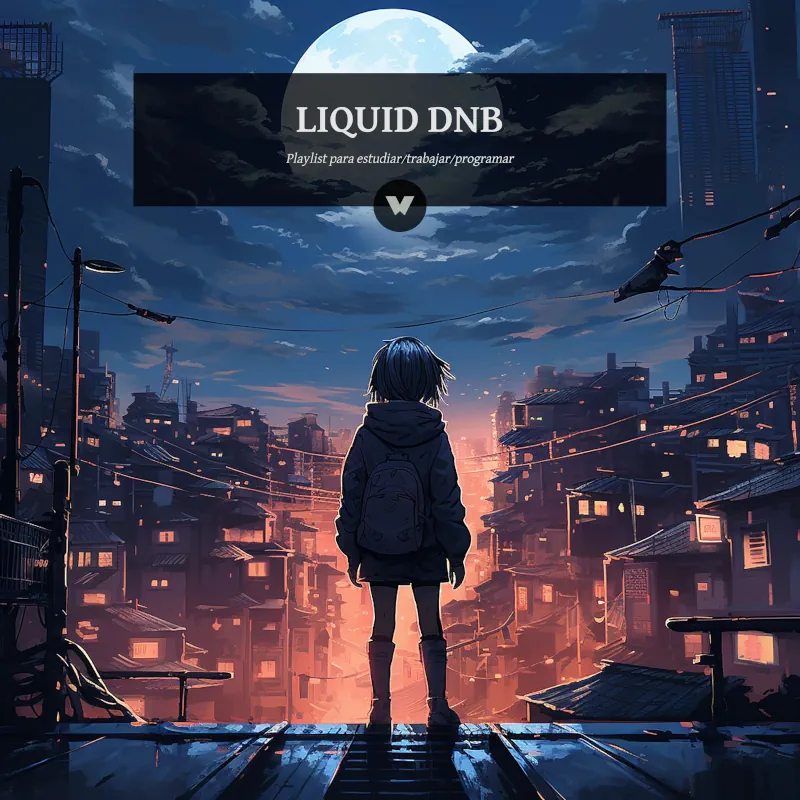
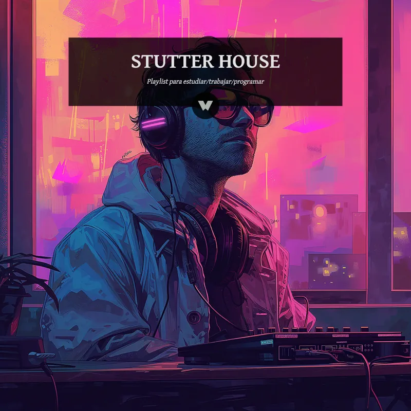
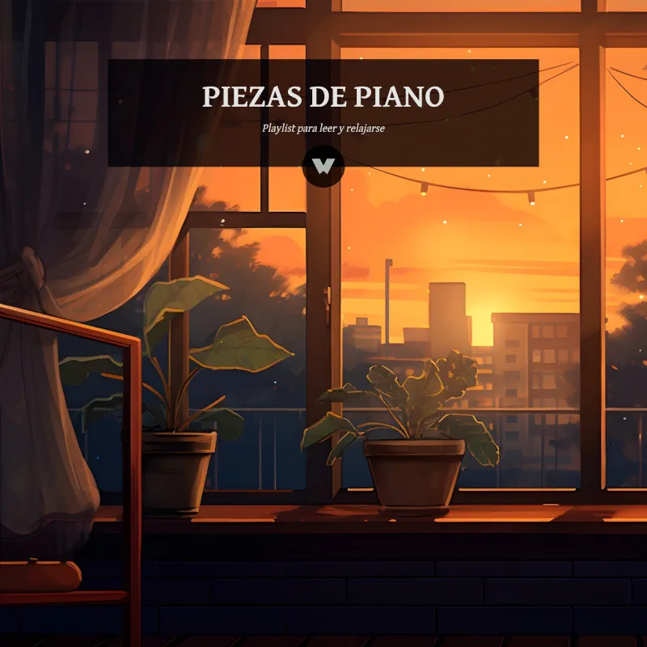

//
LISTAS DE MÚSICA
PARA INGENIEROS_
La banda sonora oficial para tus sesiones de estudio, diseño de planos o noches de entrega. Selecciona tu mood.
☕ Lofi Engineering
Beats de baja fidelidad para asignaturas de alta dificultad.
Escuchar ahora

🌇 Neon Coding
Siéntete como un hacker de los 80. Synthwave para ingenieros nocturnos.
Escuchar ahora

🌌 Lofi Atmospheric DnB
La ecuación perfecta para resolver integrales a más de 170 BPM.
Escuchar ahora

⚙️ Deep Work Techno
Ritmo industrial 4/4. Tu cerebro en modo Productividad ON.
Escuchar ahora

🌑 Night Shift Future Garage
Modo túnel activado. Aísla tu mente del ruido exterior.
Escuchar ahora

🌊 Liquid DnB Focus 174
Ritmo rápido, mente fluida. Pica código sin mirar el reloj.
Escuchar ahora

⚡Stutter House Boost
Energía extra para cuando la cafeína ya no hace efecto.
Escuchar ahora

🎹 Piano Buffer
Crea tu burbuja. La limpieza mental ideal para leer teoría o memorizar.
Escuchar ahora